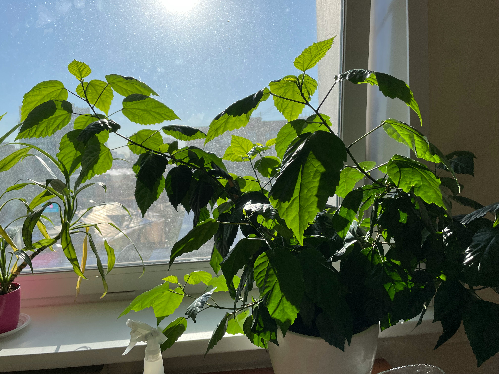

Don’t let pesky yellow spots (or pesky pests) bring you down.
If you’re struggling as a new plant owner and aren’t quite sure how to keep your indoor foliage looking bright and perky, then read on for pro tips on diagnosing plant issues.
In our master list of common plant problems, you’ll find the warning signs of each issue as well as how to resolve it.
Overwatering
What to look for: When a plant has been overwatered, older leaves will be yellow and younger leaves will appear brown instead of bright yellowish green.
How to fix: Do the touch-test! For many of us, overwatering is all too common. Wait to water until the top of the soil is visibly dry for an inch or two deep. If the dryness test fails, then wait a couple days and check again before watering.
Underwatering
What to look for: While an overwatered plant will appear yellow and droopy, an underwatered plant will appear yellow-brown and dry. Leaves that are noticeably crisp are due to underwatering.
How to fix: If you struggle to remember when it is time to water, a mobile app like Water Bug can be a big help. Just snap a pic of the plant, and set the watering schedule to receive reminders.
Not enough sun
What to look for: If not enough sun is the culprit, then the leaves will appear wilted and bent, and are likely to fall off the stem easily.
How to fix: Make sure you’re treating your plant to the type and amount of sunlight it requires. But not getting enough sun can happen accidentally during times of seasonal change. For example, if you’re bringing your houseplants in from outside as the weather turns, be sure to put them all in the most well-lit place in your house and then disburse them after they adjust.
Too much sun
What to look for: Plants that have gotten too much sun exposure will have leaves that start to turn pale, either yellowish-green or whitish-tan dependent on the plant. The may also have scorched spots. These are all signs of too much sun built up over time. If the exposure happens very suddenly, the leaves will simply appear wilted.
How to fix: If you can, move the plant to another area of the house with no direct sun. But if you have a very well-lit area of your house that you are attempting to transition plants to, then solve the issue of too much sun with extra water. You might find that with extra watering, you’re able to get the plant accustomed to the higher amount of light.

Pests
What to look for: Spider mites, fungal gnats and other tiny pests can wreak havoc on your treasured plants. Yellow blotches, white veins, silvery or bronze streaks…all of these forms of damage can signal common houseplant pests.
How to fix: Neem oil is a natural, non-toxic pesticide that is easy to find in spray form. Mist a light coating on the tops and undersides of plant leaves as well as the stems and allow to air dry. As a preventative measure once the pests are gone, you can mix up an at-home solution of 1:1 rubbing alcohol and water in a medium to large spray bottle. Then add in one teaspoon of natural dish soap to the mixture. Once a month, spritz plants with the solution and then lightly rinse with water.
Root rot
What to look for: Root rot is a more extreme form of water damage. The plant has been overwatered for so long that the roots die back and decay because of a lack of oxygen. If it’s not just a few yellowing leaves, but a plant that is full of yellowing leaves, root rot might be the culprit. Remove the plant from the pot, and if the roots are very dark and soggy instead of firm, then you’ll know for sure.
How to fix: Remove the plant from the pot, rinse away the soil, and trim all of the unhealthy-looking roots. Then you can transplant the soil into a new pot, and include a wick or synthetic string that you allow to hang out of the drainage hole to help promote excellent drainage. And of course, water less.